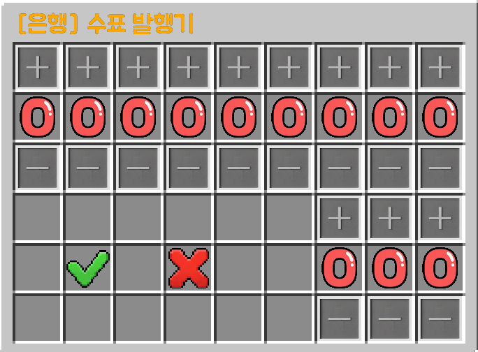

2026.07.04 | 18:28
패치 내용
-돈 뽑는 방법이 더욱 직관적으로 변했습니다
- 위의 9자리 숫자는 인출할 금액, 아래 3자리 숫자는 수표의 개수 (+, -로 숫자 변경)
- ✅ : 인출 확정, ❌ : 인출 취소

-랜덤 뽑기 박스가 생겼습니다
- 안에 들어가는 보상 아이템의 확률은 동일하며 높은 등급의 박스라도 좋지 않은 물건이 있을 수 있습니다
-길드전의 방식이 변경되었습니다
- 기존 : 신호기 파괴 시 길드 레벨 하락 | 패치 : 길드전 신청 후 상대 신호기 4칸 이내에 있을 시 점령 포인트 상승
- 점령 포인트 300 달성 시 해당 길드를 점령, 점령된 길드의 길드원은 길드 관련 메뉴를 1시간 동안 이용 불가
- 아군 길드원이 신호기 주위에 있을 시 포인트 쌓이지 않음
- 아군 길드원만 있다면 점령 포인트가 점차 하락
- 점령한 길드는 점령당한 길드의 누적 활동금을 가져감 (길드장에게 입금)
-문의 글을 작성할 수 있는 게시판이 추가 되었습니다
- 건피, 질문, 건의, 버그제보 다 받습니다
-빈 룬과 마력이 깃든 룬의 조합법이 오류가 뜨던 문제를 해결했습니다
-스킬의 밸런스가 조정되었습니다
- 명상 : 지속시간 5초 -> 10초, 배율 30배 -> 2배
- 오만한 위압 : 스턴 10초->3초
- 분노의 광폭화 : 지속시간 10초->8초
- 침묵의 질투 : 침묵 7초->6초
- 성검의 심판 데미지 상승
-직업 스킬에도 마나 소모량이 생겼습니다. 자세한 내용은 직업관련 탭에서 확인해보세요
-마나회복량이 변동되었습니다
- 3초당 1 + 레벨의 10% -> 3초당 1 + 전체 마나의 1%